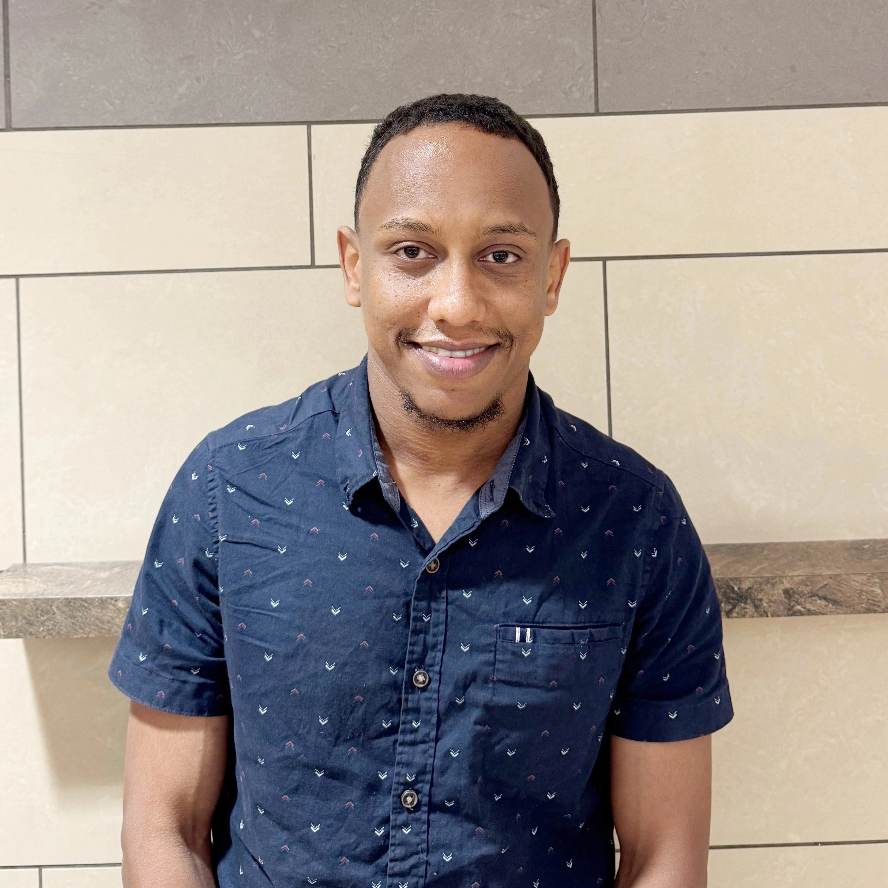

|
Brhanu Fentaw Znabu
I’m a PhD researcher in Biomedical Engineering at the
University of Nebraska–Lincoln, currently advised by
Nicole Sexton.
My research bridges computational biology and AI-driven
genomics. I explore how arboviruses evolve and adapt across
hosts, leveraging machine learning, deep learning, and
high-performance computing to analyse codon-usage patterns,
predict viral evolution, and optimise protein expression. I
integrate genomics, transcriptomics, and proteomics with
large-language models / NLP for genomics, building predictive
models of host–virus interactions that inform precision
medicine, antiviral strategies, and synthetic biology.
Email /
CV /
Scholar
/
Twitter
/
LinkedIn
|

|
About
Prior to my PhD, I earned an M.S. in Biomedical Science and
Engineering from
Gwangju Institute of Science and Technology, Korea, where I used unsupervised machine-learning
algorithms (autoregressive models and hidden Markov models) to
reveal intricate 3D behavioural patterns in diabetic-neuropathy
mouse models. I also hold a B.S. in Biomedical Engineering
from
Jimma University, Ethiopia, graduating in the top 2% of the
School of Biomedical Engineering.
If you don’t find me at my computer, I’m probably exploring a
coffee house ☕ or working out at the gym 🏋️.
|
Grants and Awards
-
Jun 2018: Graduated in the
top 2% of the School of Biomedical
Engineering, Jimma University, Ethiopia
-
Jun 2018: Best BSc Thesis Award, Ethiopian
Science, Technology & Innovation, Jimma, Ethiopia
-
Jun 2020: Research Grant for Colostomy
Device Development, Hawassa University, Ethiopia
-
Dec 2020: Korean Government Full Scholarship
for Master’s Study, GIST, Korea
|
News
-
Apr 2025: Manuscript “Moseq-based 3D
Behavioural Changes in Diabetic-Neuropathy Mice Models”
accepted in
Nature Scientific Reports.
-
Aug 2024: Joined the Sexton Lab, School of
Biological Sciences, UNL.
|
|